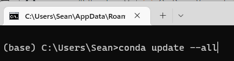

Lesson 1
Contents
5. Lesson 1#
I hope you had some time to play around with Python over the summer. If not, you will probably feel like you are starting all over again. If that is the case, please take a look at Linkedin Learning: Getting Started with Python for a refresher. Your cheat sheet notebooks should also help you.
Learning Objectives
Update your Anaconda software
Be able to import an excel file and plot data using matplotlib
Be able to write your own functions, store them in a *.py file, and import them in a new Jupyter notebook using
import
5.1. Updating Anaconda#
First open Anaconda Navigator
Then launch the command prompt
At the prompt, type “conda update –all” and press Enter 
Problems? see: https://www.anaconda.com/blog/keeping-anaconda-date
5.2. Import data from Excel#
---------------------------------------------------------------------------
ModuleNotFoundError Traceback (most recent call last)
Input In [1], in <cell line: 1>()
----> 1 from jupyterquiz import display_quiz
3 # tags: remove-input
4 # menu: View/Cell toolbar/tags or in Jupyter lab use gear icon on top right
5 # this will remove the code below when building Jupyter-book
6 # could also use remove-cell but this code has no output
8 example=[{
9 "question": '''Self Test: Create a new Jupyter notebook and import the data from <b>Al7075_out.xlsx</b>.
10 Plot stress vs strain (label your axes and use blue triangles for your data points).
(...)
27 ]
28 }]
ModuleNotFoundError: No module named 'jupyterquiz'
Were you able to successfully create and run a new jupyter notebook using your Cheat Sheet notebook from 2114? If not, fix it now. The cheat sheet won’t do you any good later if you can’t quickly get up to speed after only 3 months off.
If you were, then awesome!

5.3. Now, let’s look at how to import your own functions into a jupyter notebook#
The steps are as follows:
Write your own function in a jupyter notebook to make sure it works
Copy the function and paste into a text file using notepad
Save the file with a “.py” extension
5.3.1. Write your own function and test it#
Let’s say we want to find the volume of the unit cell in a given crystal structure and we are given the lattice parameters. If this was a cubic unit cell of edge length “a”, then the volume would just be \(a^3\).
What if our unit cell was triclinic with parameters a, b, c, \(\alpha\), \(\beta\), \(\gamma\) ? This is where we need the metric tensor, g, defined as:
The unit cell volume will then just be the square root of the determinate of g, \(\sqrt{\det(g)}\)
Hint
When dealing with matrices, you will want to use the numpy.linalg package. You can read the documentation here: https://numpy.org/doc/stable/reference/routines.linalg.html
# let's start by importing numpy. We will need this for the functions: array, cos, det, and rad2deg
import numpy as np
# We want to work out the form of our metric tensor using variables but the array needs numbers so we will
# use a simple for loop to replace our variables with numbers. This looks like:
for a,b,c,alpha,beta,gamma in [[1,2,3,90,90,90]]:
print(
np.array([
[a*a, a*b*np.cos(gamma), a*c*np.cos(beta)],
[b*a*np.cos(gamma), b*b, b*c*np.cos(alpha)],
[c*a*np.cos(beta),c*b*np.cos(alpha),c*c]
])
)
# I tried to place a lot of spacing above so you could see how the brackets all align but we don't need to do this.
# Below I'll remove most of the space.
# Also notice our output isn't quite right. The cos(90) should be zero. What is wrong?
[[ 1. -0.89614723 -1.34422085]
[-0.89614723 4. -2.6884417 ]
[-1.34422085 -2.6884417 9. ]]
# Remember that trig functions expect radians not degrees so let's use the deg2rad() function to convert
for a,b,c,alpha,beta,gamma in [[1,2,3,90,90,90]]:
print(np.array([[a*a, a*b*np.cos(np.deg2rad(gamma)), a*c*np.cos(np.deg2rad(beta))],
[b*a*np.cos(np.deg2rad(gamma)), b*b, b*c*np.cos(np.deg2rad(alpha))],
[c*a*np.cos(np.deg2rad(beta)),c*b*np.cos(np.deg2rad(alpha)),c*c]]))
# notice our off diagonal terms in the output below are 10^-16. This is zero within our floating point precision.
[[1.0000000e+00 1.2246468e-16 1.8369702e-16]
[1.2246468e-16 4.0000000e+00 3.6739404e-16]
[1.8369702e-16 3.6739404e-16 9.0000000e+00]]
Next we want to find the sqrt of the determinant of the gmatrix. This is the unit cell volume.
The det() function is in the subpackage linalg of numpy, i.e. np.linalg.det().
for a,b,c,alpha,beta,gamma in [[1,2,3,90,90,90]]:
gmatrix=np.array([[a*a, a*b*np.cos(np.deg2rad(gamma)), a*c*np.cos(np.deg2rad(beta))],
[b*a*np.cos(np.deg2rad(gamma)), b*b, b*c*np.cos(np.deg2rad(alpha))],
[c*a*np.cos(np.deg2rad(beta)),c*b*np.cos(np.deg2rad(alpha)),c*c]])
print(np.sqrt(np.linalg.det(gmatrix)))
6.0
The above cells were just to test our code for the gmatrix and the volume output. Now we just need to write this as a function and remove the “for” statement. We can also add some information about our function. Don’t forget to include any import statements needed for the function to work since this will be copied into a new file it needs to be self contained.
"""
Unit Cell Volume
The following function calculates the volume of a unit cell of any crystal system
given the lattice parameters a,b,c,alpha,beta,gamma
"""
import numpy as np
def ucvol(a,b,c,alpha,beta,gamma):
gmatrix=np.array([[a*a, a*b*np.cos(np.deg2rad(gamma)), a*c*np.cos(np.deg2rad(beta))],
[b*a*np.cos(np.deg2rad(gamma)), b*b, b*c*np.cos(np.deg2rad(alpha))],
[c*a*np.cos(np.deg2rad(beta)),c*b*np.cos(np.deg2rad(alpha)),c*c]])
return(np.sqrt(np.linalg.det(gmatrix)))
ucvol(2,3,4,90,90,90)
23.999999999999993
We could clean things up a little bit if we just import the functions we need from numpy. Then we won’t need to include np. before each call.
"""
Unit Cell Volume
The following function calculates the volume of a unit cell of any crystal system
given the lattice parameters a,b,c,alpha,beta,gamma
"""
from numpy import cos, array, deg2rad, sqrt
from numpy.linalg import det
def ucvol(a,b,c,alpha,beta,gamma):
g= array([[a*a, a*b*cos(deg2rad(gamma)), a*c*cos(deg2rad(beta))],
[b*a*cos(deg2rad(gamma)), b*b, b*c*cos(deg2rad(alpha))],
[c*a*cos(deg2rad(beta)),c*b*cos(deg2rad(alpha)),c*c]])
return(sqrt(det(g)))
ucvol(2,3,4,90,90,90)
23.999999999999993
5.3.2. Copy your function to a text file and save with .py extension#
Download notepad++ https://notepad-plus-plus.org/downloads/
Now that we know the above function works, we can use a text editor (notepad++) to paste it into a text file with the extension “.py”. I called my file: “my_func.py”. Make sure you save the file in the same directory as the notebook in which you want to import it. You can also tell windows to always open *.py files with notepad++ to make it easier to edit later.
Note: Some text file editors will probably save your file as “.py.txt”. You will have to go back in with your file explorer and delete the .txt extension.
5.3.3. Import your *.py file into a new Jupyter notebook and test your function#
Open a new notebook, import my_func (import my_func) and test the function ucvol. Then add your own function to the text file and test it.